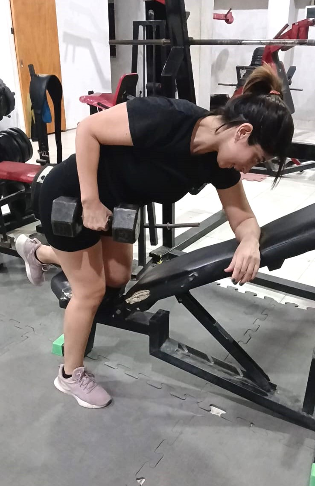
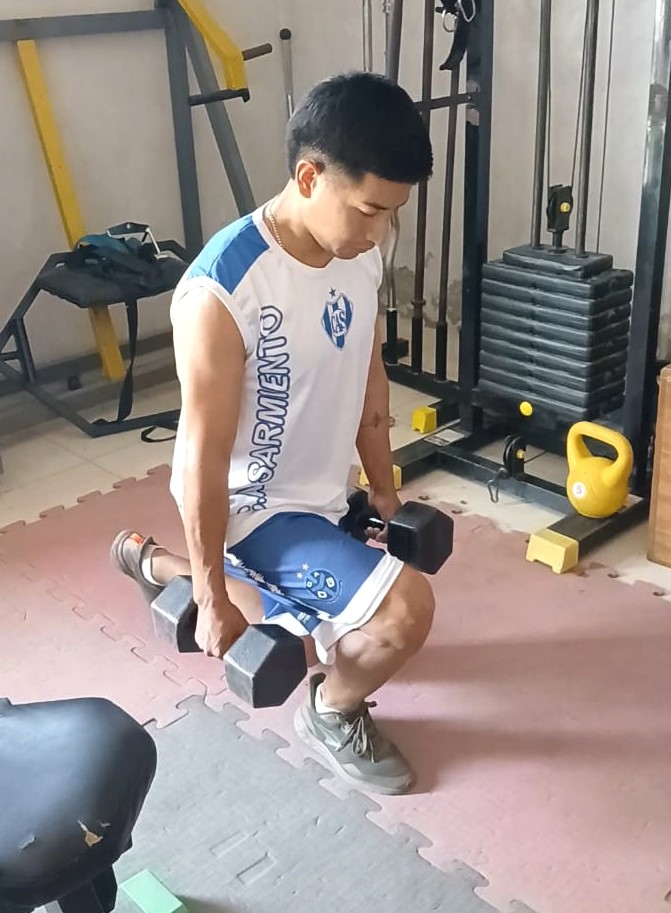
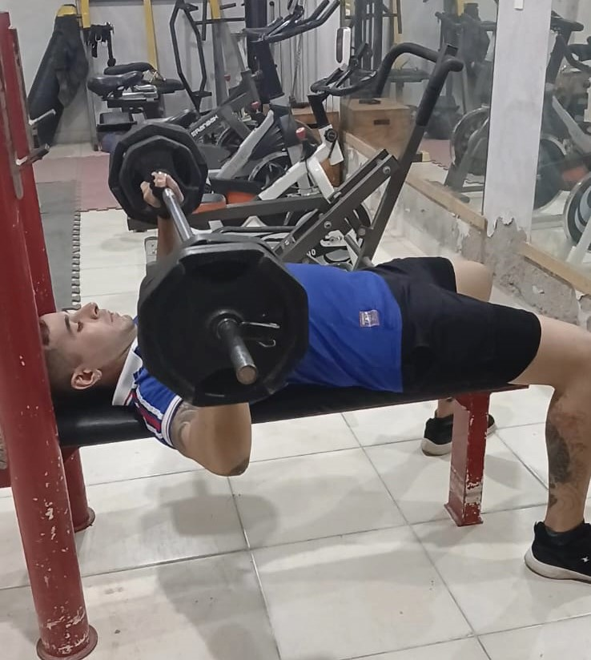

Entrenamiento Heavy Duty
Heavy Duty personalizado para personas que buscan resultados reales sin vivir en el gimnasio.
Cómo funciona el método Heavy Duty
- Alta intensidad: cada serie tiene un objetivo claro.
- Bajo volumen: menos ejercicios, más efectividad.
- Descanso planificado: el progreso ocurre fuera del entrenamiento.
- Progresión real: mejoras medibles en fuerza y control.
¿Para quién es este entrenamiento?
Personas con poco tiempo
Ideal si no podés entrenar todos los días pero querés progresar de verdad.
Quienes buscan resultados, no rutinas eternas
El foco está en entrenar con criterio, no en acumular horas ni ejercicios.
Personas cansadas de no ver cambios
Pensado para quienes entrenan hace tiempo y sienten que se estancaron.
Quién soy.
Soy Matías Simon, profesor de Educación Física. Trabajo con un enfoque basado en intensidad, técnica y recuperación.
- Menos volumen, más calidad.
- Progresión medible.
- Recuperación como parte del entrenamiento.
Qué podés esperar de este enfoque
- Entrenamientos más cortos y eficientes.
- Progreso claro en fuerza y control.
- Menor riesgo de lesiones por sobreentrenamiento.
Evaluación inicial
Antes de entrenar realizo una evaluación profesional para diseñar un plan seguro, efectivo y alineado a tu realidad.
Acceder a mi evaluaciónPreguntas frecuentes
¿El entrenamiento Heavy Duty es solo para avanzados?
No. El método se adapta al nivel de cada persona. La intensidad se regula según experiencia, técnica y recuperación.
¿Cuántos días por semana se entrena?
Generalmente entre 2 y 4 días, priorizando la recuperación muscular y la progresión real.
¿Sirve para mujeres y hombres?
Sí. El método es el mismo, lo que cambia es la planificación: ejercicios, volumen, cargas y objetivos.
¿Los entrenamientos son muy largos?
No. Son sesiones cortas y altamente efectivas, enfocadas en calidad más que cantidad.
¿Necesito experiencia previa en gimnasio?
No. Se puede comenzar desde cero, priorizando técnica, control y progresión segura.
¿Cómo es el proceso?
1
1. Contacto
Charla inicial para conocer objetivos y experiencia previa.
2
2. Evaluación
Análisis del estado físico y disponibilidad semanal.
3
3. Plan personalizado
Diseño de un plan Heavy Duty adaptado a cada persona.
4
4. Seguimiento
Ajustes según progreso y recuperación.